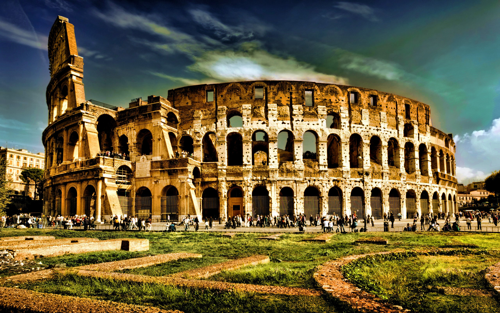

Europe
1. With a land area of only 4,000,000 square miles, Europe is the second smallest continent in the world, just behind Australia.
2. Despite its relatively small size, Europe is quite populous. It comes right after Asia and Africa in terms of population.
3. It might be the second smallest continent, but Europe is home to the largest country in the world. Russia is so big, in fact, that it takes up forty percent of Europe’s land area.
4. Europe was the main location of several historical periods that made a huge impact on the world like the Renaissance and the Industrial Revolution.
5.When it comes to land area, Europe is only two percent bigger than Canada.
6. The etymology for the word “Europe” is uncertain up to the present time. Some people like to think that it came from Europa, one of Zeus’s many wives in Greek mythology.
7. The name “Europe” might have originated from the Greek word “eurus,” meaning wide or broad.
8. Aside from “eurus,” the Greek word for wide, Europe might have also come from the ancient Syrian word for sunset, “ereb.”
9. The first historians who first used “Europe” (or an ancient variant of the name thereof) as a geographical term was Hecataeus and Anaximander.
10. The boundary between Asia and Europe changed a lot during the course of history. Anaximander and Herodotus placed the boundary near the Phasis (modern day Rioni) river, while Roman era historians like Ptolemy and Strabo placed it near Tanais (modern day Don) river.
11. Europe is also called as Frangistan or “the land of the Franks” in the vernacular of some Turkic languages.
12. Some of the world’s greatest empires were founded on European land. This includes the ancient Roman Empire (the cradle of modern civilization, according to some historians), and then later on, the British, Spanish, and Russian Empires.
13. Aside from having the largest country in the world, Europe also has the smallest! The Vatican has a land area of only 0.44 square kilometers.
14. There are more than 250 distinct languages spoken in Europe.
15. The largest city in Europe is Istanbul, if transcontinental countries that straddle both Europe and Asia (like Turkey) is counted. Otherwise, Moscow is the largest, followed by Paris and London.

Europe has many interesting places to visit such as the Eiffel Tower built by Eiffel et Compagnie.
To learn more about him click this button
Colloseum
The Colosseum, also named the Flavian Amphitheater, is a large amphitheater in Rome. It was built during the reign of the Flavian emperors as a gift to the Roman people. Construction of the Colosseum began sometime between A.D. 70 and 72 under the emperor Vespasian. It opened nearly a decade later and was modified several times in the following years. The massive structure measured approximately 189 by 156 meters (620 by 513 feet), towered four stories high, and included eighty entrances to the amphitheater—seventy-six for the patrons, two for participants of events, and two exclusively for the emperor to use. The sheer number of entrances proved to be necessary: the Colosseum could hold more than 50,000 spectators at its maximum capacity. When the Colosseum first opened, the emperor Titus celebrated with a hundred days of gladiatorial games. Emperors traditionally attended the games. The emperor Commodus is known to have performed in the arena on hundreds of occasions. Aside from the games, the Colosseum also hosted dramas, reenactments, and even public executions. Eventually, the Romans’ interest in the games waned. After the fall of the Western Roman Empire, the Colosseum began to deteriorate. A series of earthquakes during the fifth century A.D. damaged the structure, and it also suffered from neglect. By the 20th century, nearly two-thirds of the original building had been destroyed. Nevertheless, a restoration project began in the 1990s to repair the Colosseum. Today it is one of modern-day Rome’s most popular tourist attractions, hosting millions of visitors a year.